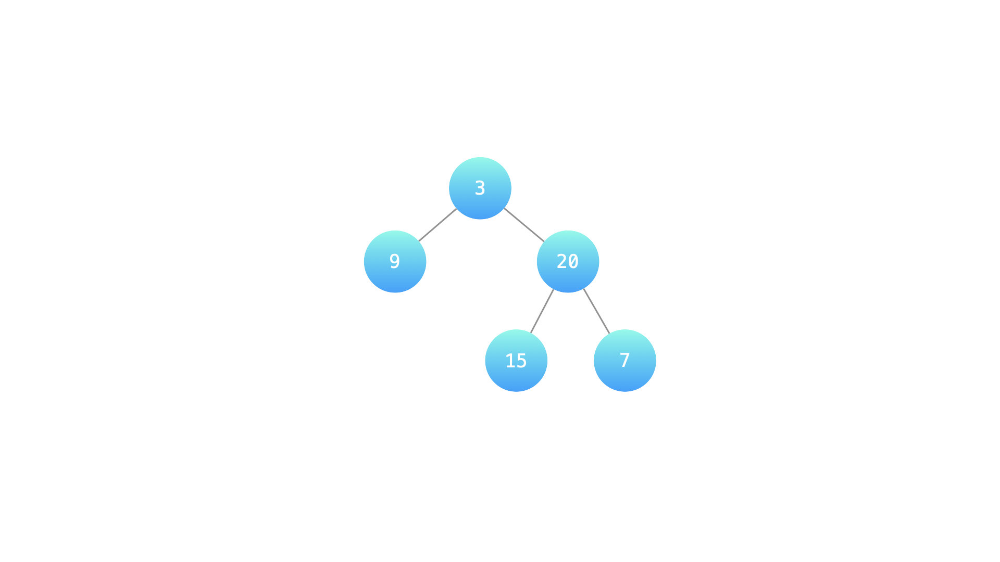
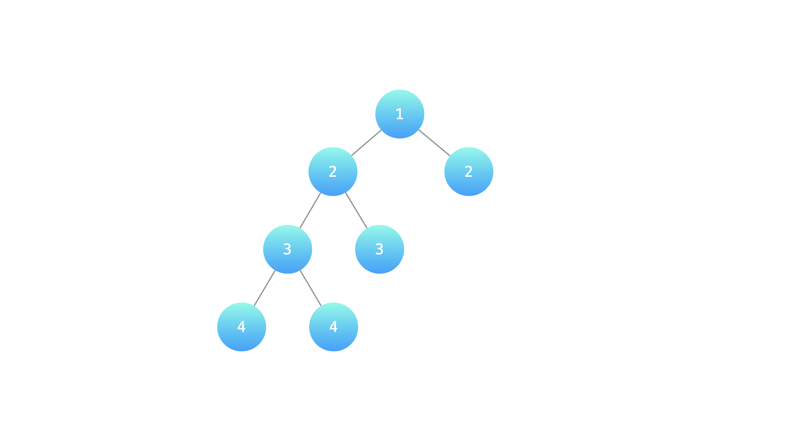

剑指 Offer 55 - II. 判断是否为平衡二叉树
后序递归算高度，失衡就用 -1 当信号一路上传短路，根结点只要看结果是不是 -1。
思路
height(node)返回子树高度；-1不表示高度，而是「这棵子树已经失衡」。- 先算左：
-1直接返回，右子树都不用看（短路是 O(n) 的关键）。 - 左右都正常才比较：
|lh - rh| > 1返回-1，否则回传max(lh, rh) + 1。 - 根结点
height(root) != -1即答案；空树返回true。
图解
最优解
1class Solution {2 public boolean isBalanced(TreeNode root) {3 return height(root) != -1;4 }5 6 // 返回子树高度；一旦发现不平衡就返回 -1 并一路上传，不再往下算7 private int height(TreeNode node) {8 if (node == null) return 0;9 int lh = height(node.left);10 if (lh == -1) return -1; // 左子树已失衡，整棵树都不用再看11 int rh = height(node.right);12 if (rh == -1) return -1;13 if (Math.abs(lh - rh) > 1) return -1; // 本结点左右高差超过 114 return Math.max(lh, rh) + 1;15 }16}题目
输入一棵二叉树的根节点，判断该树是不是平衡二叉树。如果某二叉树中任意节点的左右子树的深度相差不超过1，那么它就是一棵平衡二叉树。
示例 1：
输入：root = [3,9,20,null,null,15,7] 输出：true 解释：如下图

示例 2：
输入：root = [1,2,2,3,3,null,null,4,4] 输出：false 解释：如下图

提示：
0 <= 树的结点个数 <= 10000
注意：本题与主站 110 题相同：https://leetcode.cn/problems/balanced-binary-tree/
题面取自力扣当前版本。
数据快照 2026-11-04。题面版权归力扣所有，本站点仅供本人学习使用，请勿对外发布。